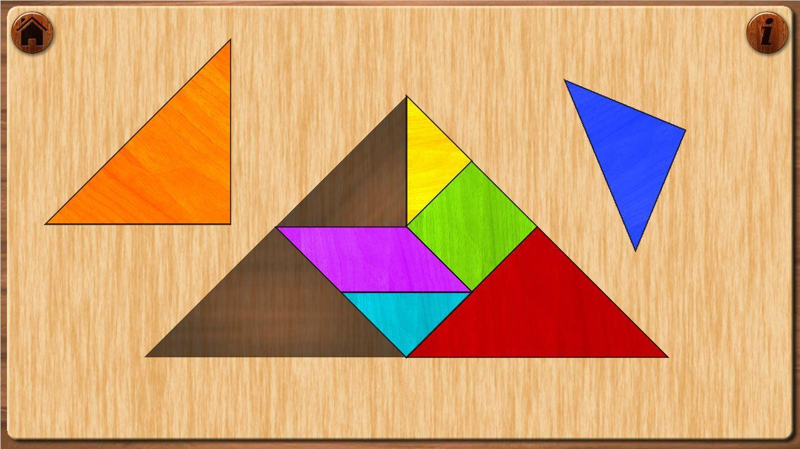
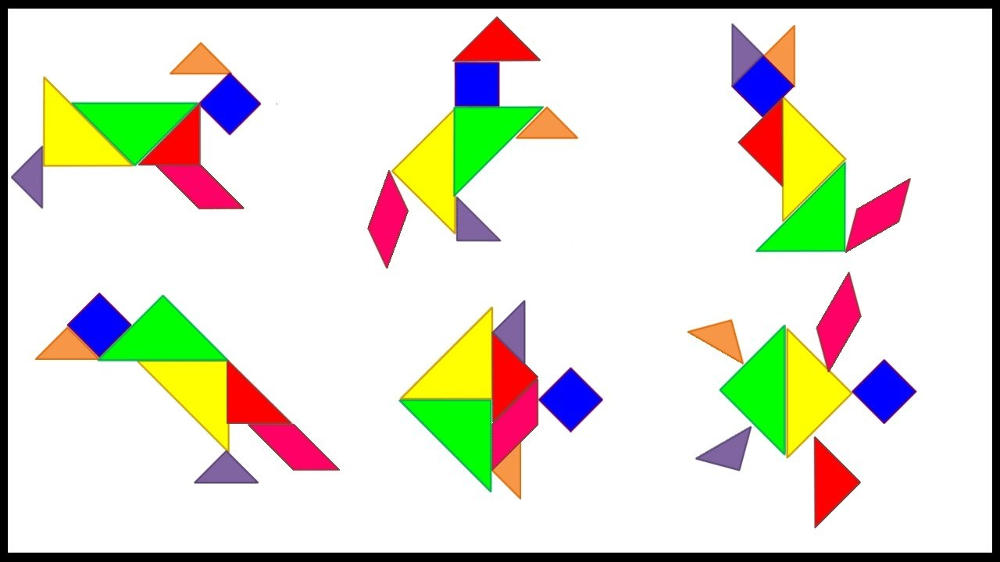

¿Que es el tangram y para que sirve?



El Tangram es un rompecabezas que está compuesto por 7 piezas: un paralelogramo (romboide), un cuadrado y 5 triángulos. El objetivo de este juego es crear figuras utilizando las 7 piezas. Las piezas deben tocarse pero no superponerse. Según los registros históricos chinos, estos muebles estaban formados originalmente por un juego de 6 mesas rectangulares. Más adelante se agregó una mesa triangular y las personas podían acomodar las mesas de manera que formaran una gran mesa cuadrada. Hubo otra variación más adelante, durante la dinastía Ming, y un poco más tarde fue cuando se convirtió en un juego.